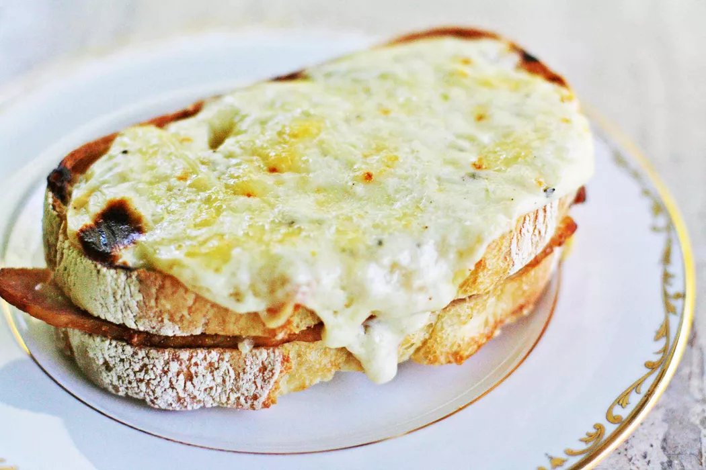

Croque Monsieur Recipe

Croque-Monsieur Ham and Cheese Sandwich
Class French Croque Monsieur recipe, toasted ham and Swiss cheese sandwich, topped with a bechamel sauce of butter, flour, milk, nutmeg, Parmesan and Gruyere.
Years ago, a French friend of mine introduced me to Croque-Monsieur, the French version of a toasted ham and Swiss sandwich.
I remember it being loaded with butter and cheese, and absolutely the most delicious sandwich in the world. My friend was somewhat addicted to these sandwiches, and after having one myself I could see why!
Gruyère cheese and ham just belong together.
Ingredients
- 2 tablespoons unsalted butter
- 2 tablespoons all-purpose flour
- 1 1/2 cups milk
- A pinch each of salt, freshly ground pepper, nutmeg, or more to taste
- 1 1/2 cups Gruyère cheese, grated (about 1 1/2 cups grated)
- 1/4 cup Grated parmesan cheese (packed)
- 8 slices French or Italian loaf bread
- 12 ounces ham, sliced
- 1 teaspoon Dijon mustard
Steps
- Preheat oven to 400 F
- Make the béchamel sauce
- Toast bread slices in oven
- Build the sandwitches
- Add béchamel, more Gruyere
- Broil till bubbly